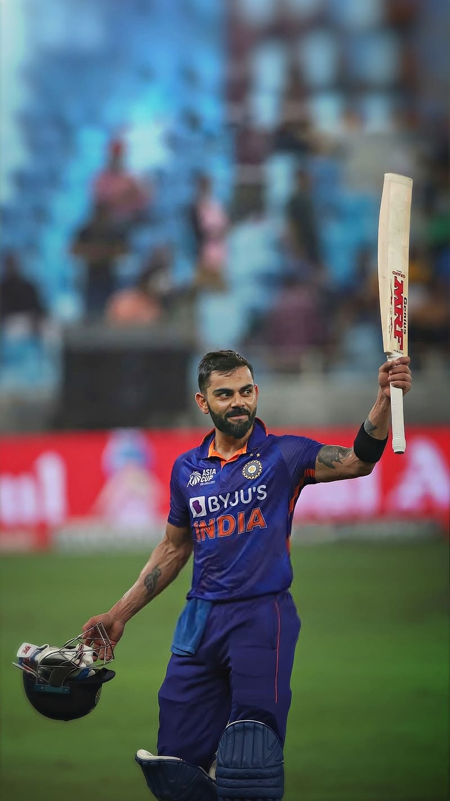
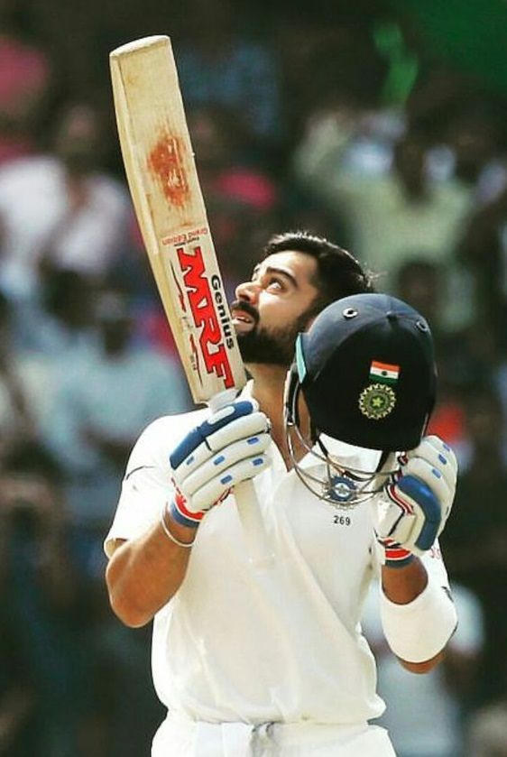

T20 Carrier
Matches : 115
Innings : 107
Runs : 4008 | Avg : 52.74
50s : 37 | 100s : 1

ODI Carrier
Matches : 271
Innings : 262
Runs : 12809 | Avg : 57.70
50s : 64 | 100s : 46

Test Carrier
Matches : 107
Innings : 182
Runs : 8230 | Avg : 48.13
50s : 28 | 100s : 27